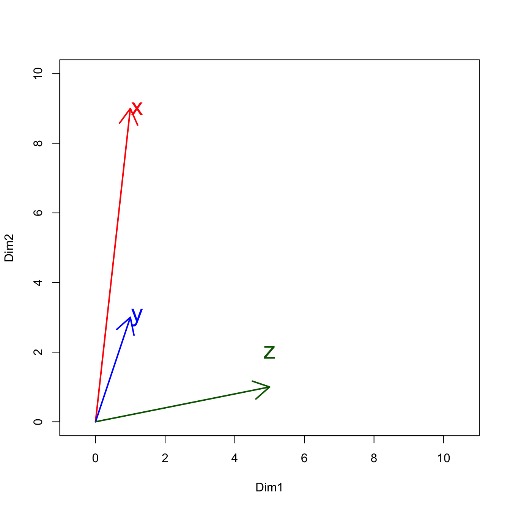

Chapter 6 Midterm Exam
6.1 Important Instructions
The midterm exam consists of four parts. The first question of each part is required (i.e., Exercise 6.1, 6.3, 6.6, 6.9 ). Finishing these mandatory questions (15% for each) should secure a decent grade for your midterm (i.e., 60%).
As for the other questions, they are elective and you may choose as many as you would like to work on (10% each).
The total grade of the midterm is 130% (Mandatory questions: 60%; Self-selected questions: 70%).
Your submitted R script should follow the exact same format as your previously submitted assignments. Namely, you need to indicate clearly which parts of the codes respond to which midterm question. Always specify clearly the exercise number.
Please note that your submitted script will be evaluated by sourcing the entire script in the working directory (i.e., a directory with the
demo_datafolder containing all necessary data files). And the performance of your scripts will be assessed in terms of how close the outputs are to the sample results provided on this sheet.For outputs of data frames, please check the sample results provided in each exercise for more detail on the required columns.
Asking others to write the code for you is ABSOLUTELY forbidden.
Please submit your R script by: 15:30, Mon., April 20, 2020 via Moodle.
Name your script as follows:
mideterm-alvin.R(use your own name in the filename).
6.2 Part I
Exercise 6.1 (15%, Required) Create a regular expression to extract all the subtrings that start with s and end with s from the long string in text (as provided below). There should be SIX substrings from text that satisfy this condition.
## s is
## s a s
## sample s
## sentence and s
## sentence two s
## should come the sExercise 6.2 (10%) Please use the preloaded vector, sentences, from library(stringr) as the dataset. Create a regular expression to retreive any contiguous two-word combinations from sentences, where the two words share the same letter(s) at the word-initial positions.
Please also identify all the letters in the word-initial positions that are shared by both words. For example, the initial letters shared by the two-word combination, words work, would be “wor”.
The result should be a data frame, which includes the following columns:
sent_id: the unique numeric ID of the sentence from which the two-word combination is extractedphrase: the strings of the two-word combinationshared_initial: all the shared word-initial letters of these two words
6.3 Part II
Exercise 6.3 (15%, Required) On this page Worldometer, you can find the most recent COVID-19 data summarized in a nice table on the webpage. Please create a script to automatically scrape statistics from this webpage and load it as a tibble named COVID19 in R.
Specifically, in your resulting tibble COVID19, each row refers to a country, and columns should include:
- each country’s names (
Country) - total numbers of confirmed cases (
TotalCases) - total numbers of deaths (
TotalDeaths) - total numbers of recovered cases (
TotalRecovered) - total numbers of tests (`TotalTests)
- the continent that the country belongs to (
Continent)
-
Please remove rows whose
Continentis not specified (e.g., Diamond Princess, MS Zaadam). - Please make sure that the numeric columns are indeed of a numeric data type. This is important for the computation in later exercises.
- You may check your result based on the total number of countries as well as the case numbers for particular countries (e.g., US in the first row, Yemen in the last row).
Exercise 6.4 (10%) Continuing Exercise 6.3, with the dataset COVID19, please identify the top three countries from each continent which have the most number of total cases.
Exercise 6.5 (10%) Continuing Exercise 6.3, with the dataset COVID19, please compute the positive rate of each country and report the mean scores and 95% confidence intervals of the positive rates by continent in a data frame and visualize these statistics in a bar plot as shown below.
The Positive Rate of a country is defined as follows:
\[Positive\; Rates = \frac{Total\;Cases}{Total\;Tests}\]
The 95% Confidence Intervals are defined as:
\[\overline{X} \pm 1.96 \times \frac{\sigma}{\sqrt{N}}\]
- \(\overline{X}\) is the mean score of the Positive Rates for countries belonging to the same continent
- \(\sigma\) is the standard deviation of the Positive Rates for countries belong to the same continent
- \(N\) is the number of countries in each continent
A sample data frame and graph are provided below. The data frame should include the following columns:
Continent: the name of the continentMeanPositiveRates: the mean score of the positive rates for countries belonging to the continentSDPositiveRates: the standard deviation of the positive rates for countries belonging to the continentN: the number of countries in the continentCI_Upper: the upper bound of the 95% confidence interval (i.e., \(\overline{X} + 1.96 \times \frac{\sigma}{\sqrt{N}}\))CI_Lower: the lower bound of the 95% confidence interval (i.e., \(\overline{X} - 1.96 \times \frac{\sigma}{\sqrt{N}}\))
-
Please ignore cases where the Positive Rates are
NA, i.e., cases where the number ofTotalTestsis not available. - Please round ALL numbers to two decimal places
- Please adjust the aesthetic properties of the graph according to the sample barplot as closely as possible.

6.4 Part III
Exercise 6.6 (15%, Required) The dataset demo_data/data-song.csv includes around 57650 song lyrics (cf. original data source Kaggle) as well as the metadata information of each song (e.g., artist, song title, and original link to the lyric). Please use the package quanteda to create a corpus object of the dataset and use quanteda::summary() to create a descriptive plot showing the song length (in numbers of word tokens) distributions of the collection.
- The first ten rows of the
demo_data/data-song.csv:

Exercise 6.7 (10%) Continuing Exercise 6.6, please convert the corpus object into a tidy structure. Use unnest_tokens() to find all the four-grams:
- used in songs by Taylor Swift and Lady Gaga;
- occurring in at least four different songs of theirs;
- that DO NOT consist of the same word (i.e., Four-grams like oh oh oh oh, eh eh eh eh, should not be included)
Exercise 6.8 (10%) Continuing Exercise 6.6, please use the song lyrics dataset and find the top 100 bigrams of the corpus ranked according to the lexical associations of the bigrams. Please use the Log-Likelihood Ratios for ranking. Specific distributional criteria for bigrams are included below.
A sample data frame is provided below. The result data frame should include the following columns:
w1: the first word of the bigramw2: the second word of the bigramdispersion: the number of artists who have used the bigram in their songsLLR: the lexical association of the bigramO..: All observed frequenciesE..: All expected frequenciesASSOCIATION: whether the bigram demonstrates anATTRACTIONorREPULSIONpattern
-
With respect to the tokenization treatments of punctuations and letter-casing, please follow the default settings in
unnest_tokens(). - Please note that before computing the lexical associations of the bigrams, DO NOT include bigrams spanning the line breaks in the lyrics.
- Before computing the associations of the bigrams, please include only bigrams which have been used by at least 10 different artists.
- In your result collocation data frame, please include only bigrams that DO show attraction patterns, i.e., bigrams whose observed joint freqeuncies are larger than the expected joint freqeuncy (i.e., O11 > E11)
- Arrange your data frame according to the LLR in a descending order.
- Please round all numbers in the result data frame to two decimal places
- Important numbers to check your results
- Total Number of Unigrams (Token Frequency): 12700137
- Total Number of Bigram Types (Dispersion >= 10) (Type Frequency): 86072
- Total Number of Bigram Types (Dispersion >= 10 + O11 > E11) (Type Frequency): 60215
- Result
6.5 Part IV
Exercise 6.9 (15%, Required) The dataset of demo_data/data-quotes.txt includes 3899 English quotes (cf. original data source: Kaggle). Each line in the text file is a quote. Please use spacyr to parse all the quotes and create a sentence-based data frame of the corpus, named quotes_sentences, where each row is a sentence of the quote with all words annotated with parts-of-speech tags. The data frame quotes_sentences should also include proper index numbers of the doc_id and sentence_id, indicating its sources.
-
It may take a while to
space_parse()the texts indemo_data/data-quotes.txt. It is suggested to save the parsed results when you develop your solutions. -
When you
space_parse()the texts, because we do not need to analyze the named entity, please turn off this argument when initializing spacy, i.e.,spacy_initialize(entity=FASLE)as well as callingspacy_parse(…, entity=FALSE).
Exercise 6.10 (10%) Continuing Exercise 6.9, with the sentence-based corpus data frame, quotes_sentences, please extract all two-word combinations from each sentence, where the first word is an adjective and the second word is a noun.
The two-word combinations should not span the sentence boundary.
An adjective is defined as any word whose POS tag belongs to JJ, JJR, or JJS; a noun is defined as any word whose POS tag belongs to NN, NNP, NNPS, or NNS.
Please show the frequencies of these “adjective + noun” combinations as well as their dispersions. Dispsersions of the combinations are defined as the number of different quotes where the bigram is observed.
In your results, please include two-word combinations whose dispersion values are larger than 2 (i.e., only two-word combinations which have occurred in more than two different quotes are included in the result) and arrange the bigrams according to their frequencies.
A sample result has been provided below.-
With respect to the treatments of punctuation symbols and letter-casing, please follow the default settings in
unnest_tokens().
Exercise 6.11 (10%) Continuing Exercise 6.10, if we would like to examine the “adjective + noun” combinations further, we can analyze how each noun co-occurrs with each adjective.
Please create a co-occurrence matrix as shown below. In this co-occurrence matrix, the cells refer to the co-occurrence frequencies of a particular adjective (i.e., the row) with a particular noun (i.e., the column).
For the columns, please include only the msot frequent 10 nouns occurring in the “adjective + noun” combinations; for the rows, please include only the adjectives that do co-occur with the previous top ten nouns. (You may check the dimension numbers of your result.)-
In your resulting co-occurrence matrix:
- there will be 10 columns, corresponding to the top frequent 10 nouns in this “adjective + noun” combination;
- there will be 167 rows, indicating the adjective types that co-occur with at least one of these top 10 nouns in the “adjective + noun” pattern.
- The columns are arranged according to the frequencies of the top 10 nouns (in a descending order).
- The rows are arranged alphabetically.
You’ve reached the end of the exam. Good luck!